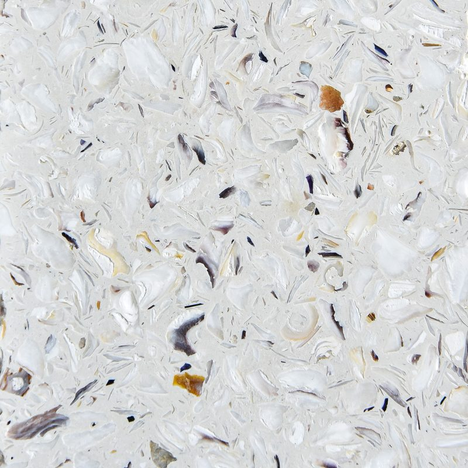
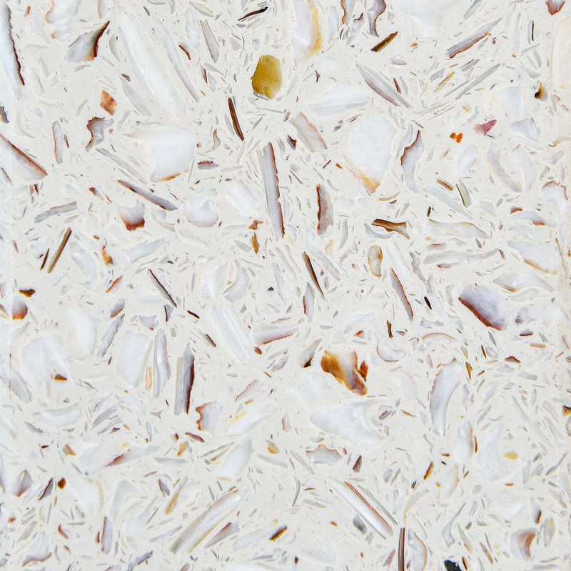

Ostrea
Ostrea : un plan de travail né des coquillages
Le plan de travail Ostrea est sans doute la surface la plus poétique de notre catalogue. Ses éclats de coquilles d'huîtres et de Saint-Jacques créent un moucheté nacré qui change avec la lumière, tout en valorisant un déchet de l'industrie alimentaire. Deux coloris, Huîtres et Saint Jacques, taillés sur mesure à Mafra.
Le plan de travail Pierre recyclée Ostrea
Surface dense et non poreuse composée de coquilles d'huîtres et de Saint-Jacques broyées, liées par une résine éco-compatible. Les éclats de coquillage créent un moucheté aux reflets nacrés qui changent avec la lumière, tout en valorisant un déchet de l'industrie alimentaire.
Pierre recyclée Ostrea
- Adouci
- Épaisseurs 20 mm
- Composition
- Coquillages recyclés
- Sans hydrofuge
- Non poreux
- Aspect
- Reflets nacrés
- Épaisseur
- 20 mm
Finitions et formats
- Adouci
- 20 mm
Coloris Pierre recyclée Ostrea
2 coloris disponibles, à voir aussi en vrai dans notre usine de Mafra sur rendez-vous.

HuîtresAdouciBlanc légèrement grisé au grain fin, mouchetures sombres et reflets nacrés.
Saint JacquesAdouciBlanc cassé constellé d'éclats beige, brun, doré et rose nacrés.
Ambiances
Pierre recyclée OstreaAmbiance cuisine Pierre recyclée OstreaAmbiance salle de bain Pierre recyclée OstreaAmbiance plan de travail


Pourquoi choisir Ostrea pour votre plan de travail
Ostrea plaît à ceux qui veulent une matière qui raconte une histoire. Chaque année, l'industrie de la mer produit d'importantes quantités de coquilles ; Ostrea les broie et les lie avec une résine éco-compatible pour en faire une surface de cuisine ou de salle de bains.
Le résultat est dense et non poreux : pas d'hydrofuge à prévoir, et un nettoyage simple à l'eau et au savon doux. Les éclats de coquillage captent la lumière différemment selon l'heure de la journée, avec des reflets nacrés qui donnent beaucoup de profondeur à une surface pourtant mate.
Ostrea est proposé en finition adoucie et en 20 mm. Comme toute surface à liant résine, il apprécie un dessous de plat pour les récipients chauds et une planche pour la découpe.
Huîtres ou Saint Jacques : bien choisir son coloris Ostrea
Les deux coloris Ostrea portent le nom de leur coquillage d'origine, et leur rendu est bien distinct.
Huîtres est un blanc légèrement grisé au grain fin, ponctué de mouchetures sombres et de reflets nacrés. Sobre et lumineux, il s'accorde avec les façades blanches, grises ou bleu marine, et convient très bien à une cuisine d'esprit bord de mer comme à une salle de bains contemporaine.
Saint Jacques est un blanc cassé constellé d'éclats beige, brun, doré et rose nacrés. Plus chaleureux, il se marie avec le bois clair, le rotin, le laiton et les tons terre.
Le moucheté naturel dissimule bien les petites traces du quotidien. Nous vous conseillons de voir un échantillon en vrai, car les reflets nacrés se perçoivent mal en photo.
Vos questions
Ostrea est-il adapté à un plan de travail de cuisine ?
Oui, sa surface dense et non poreuse ne laisse pas pénétrer les liquides et se nettoie facilement. Il convient bien à une cuisine où l'on cuisine raisonnablement, avec les bons réflexes : dessous de plat pour les plats chauds, planche à découper, pas de produits abrasifs sur la finition adoucie. Pour une cuisine très intensive ou en extérieur, nous comparerons avec vous d'autres matériaux.
Un plan de travail Ostrea peut-il être poli brillant ?
Dans notre catalogue, Ostrea est proposé uniquement en finition adoucie, en 20 mm. C'est cette finition mate et douce qui met le mieux en valeur les éclats de coquillage et leurs reflets nacrés, sans effet miroir. Si vous cherchez une surface recyclée en poli brillant, regardez la pierre recyclée MStone ou Compac, qui proposent toutes deux une finition polie.
Parlons de votre projet
Un expert étudie votre demande et vous répond sous 48 heures ouvrées, avec une proposition sur mesure.